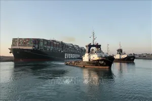

Tàu chở hàng Ever Given được giải cứu hoàn toàn
Chủ tịch Cơ quan quản lý kênh đào Suez cho biết hoạt động giao thông đi lại qua kênh đào Suez ở Ai Cập đã được nối lại sau khi tàu mắc kẹt được chất hàng lên và tiếp tục hành trình của mình.